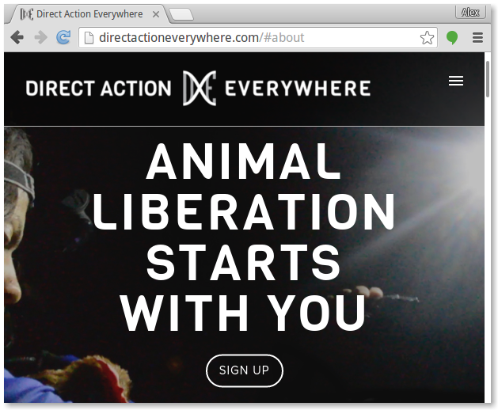

Learn to Code: For the Animals
Web Basics

Websites are made up of HTML, CSS, and JavaScriptcode. There can be more to it than that, but for now we're going to focus on front-end code. HTML, CSS, and JavaScript are front-end code. The front-end is the part of the website you can see. It's a code that a web browser can directly understand.
Pictured: the front-end of directactioneverywhere.com

Websites can also have
back-end code. Back-end code can be used to generate front-end code dynamically. While front-end code is limited in its capability, the capability of back-end code is virtually limitless. Any programming language can be used to write back-end code, such as C++, Python, Ruby, C, Lisp, Fortran, and even
Brainfuck. More on that later.